| 日付 | 2023年5月1日（月） |
|---|---|
| メンバー | 家族（妻） |
| アクセス | 電車 |
本日は子供は学校で、親のみ休暇。
天気があまりよくないので、山に行くのは明日にして、
本日は明治神宮と食事に行くことにする。
原宿駅に到着。この駅に来るのは本当に久し振りだ。
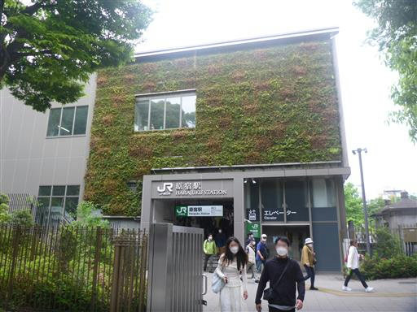
駅を出たすぐ側が明治神宮の入口。巨大な鳥居が見える。
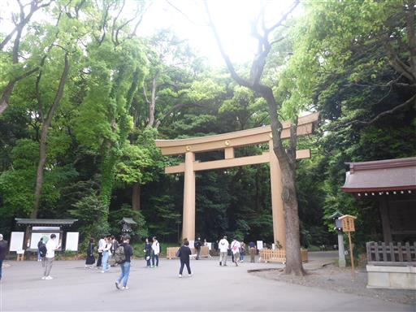
参道を歩く。
周囲の森は明治神宮創建時から手を入れられていない森で、学術的に貴重な森だ。
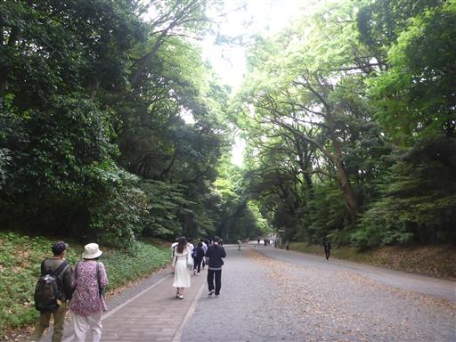
多くの酒樽が並んでいる。
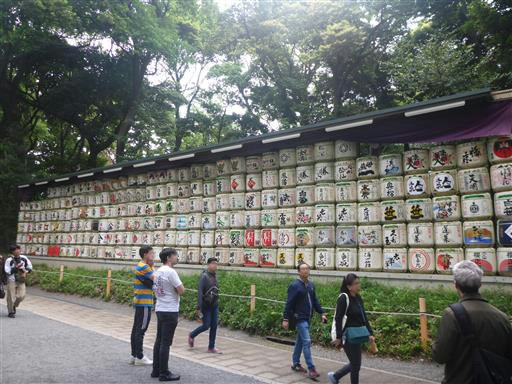
こちらはワイン樽。
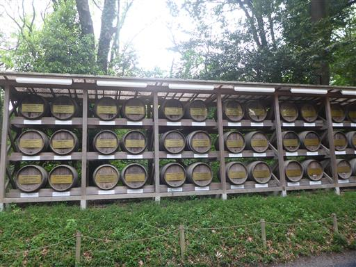
大鳥居。
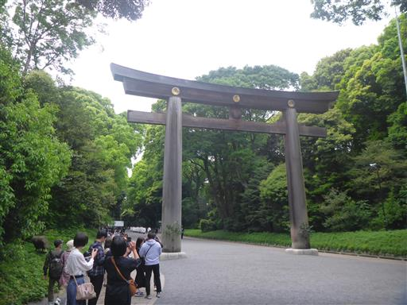
神官が通る間、少し待たされる。
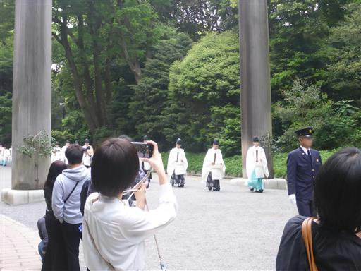
手水舎。
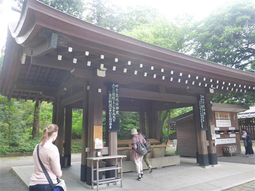
三ノ鳥居を潜る。
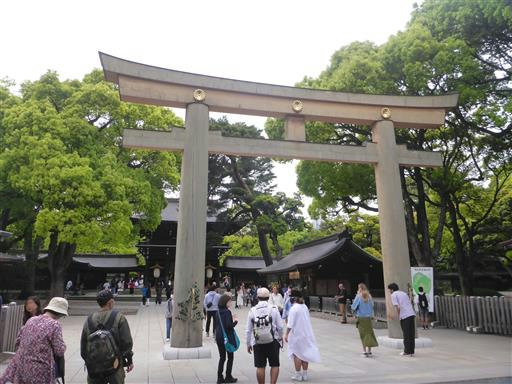
南神門。
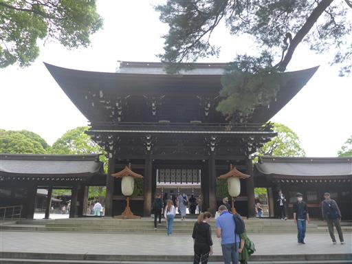
拝殿に到着。真ん中の白い布が少々無粋だ。
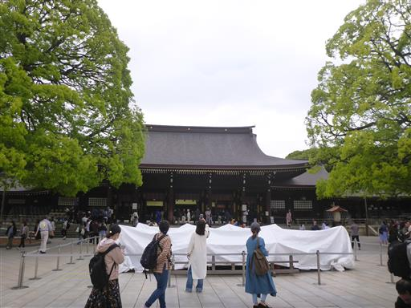
クスノキは見事に丸く剪定されている。
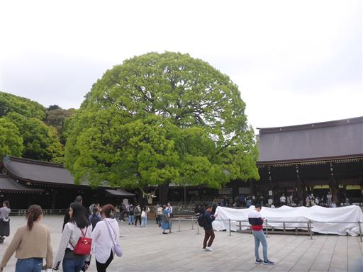
近づいてみると、2本の木があることが分かる。夫婦楠と呼ばれているようだ。
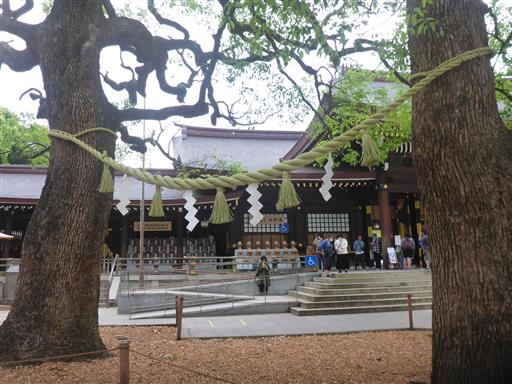
反対側の木の周囲には絵馬がかけられている。外国語が多い。
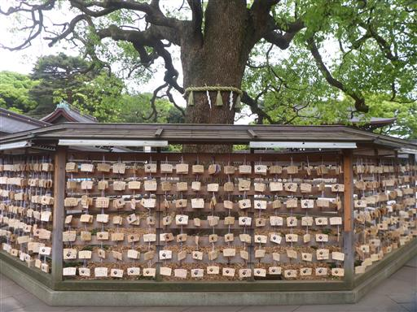
拝殿はそれなりに大きな建物だ。
参拝者日本一の神社で初詣の時は人でごった返す。
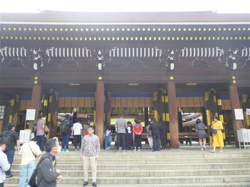
有料ゾーンの御苑も訪問してみる。

隔雲亭。電気が付いているが、中に入ることはできるのだろうか？
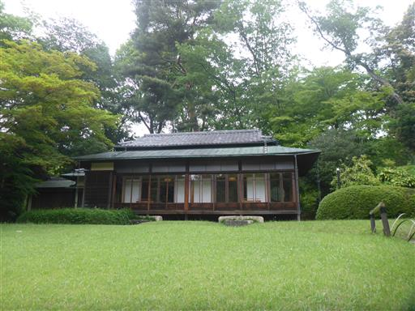
南池。
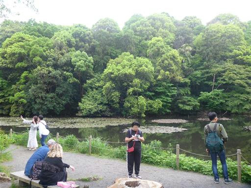
睡蓮やコウホネが植えられていて、その間をコイが悠々と泳いでいる。
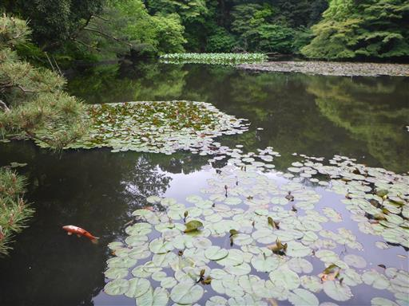
まだ蕾で花の季節はもう少し先のようだ。
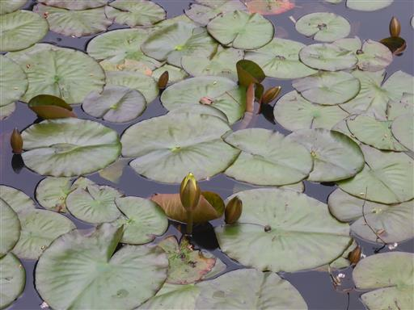
清正井。透き通った水が湧き出している。南池の水源だ。
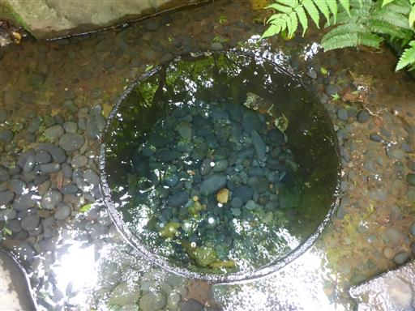
アヤメの花が咲いている。御苑でこの時期に咲いている数少ない花だ。
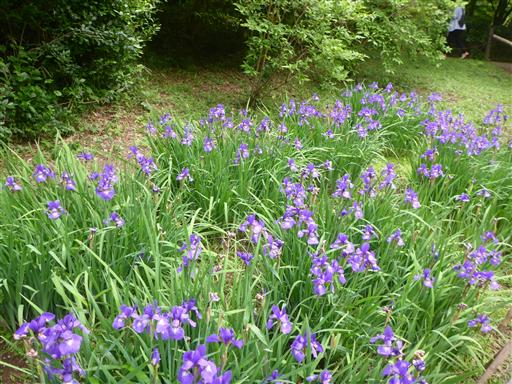
ツツジ山。残念ながら、もうほとんど花は終わっている。
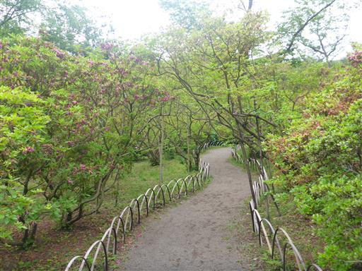
趣のある東屋。
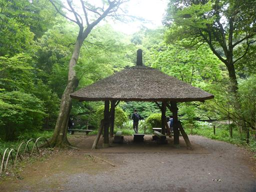
曲がりくねった木と蔓でできている。地震が来たら崩壊しそうで怖い。
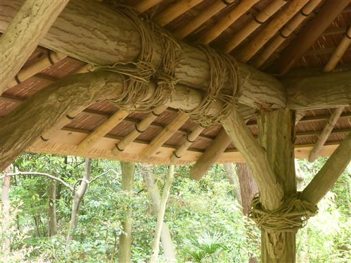
明治神宮を後にする。まだ昼食まで時間があるため、竹下通りに行ってみることにする。
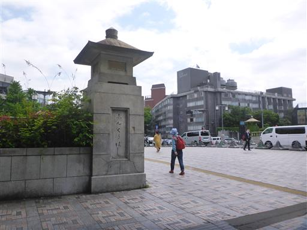
ここが有名な竹下通りの入口。
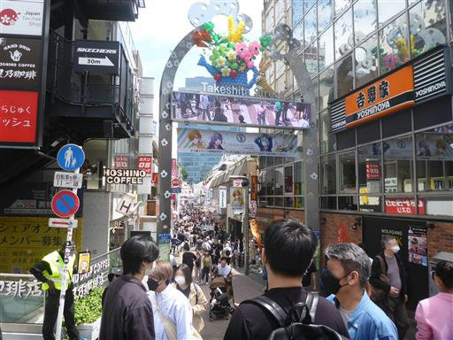
クレープ屋さん。並んでいるのは多くが外国人だ。
明治神宮も竹下通りも外国人が多い。
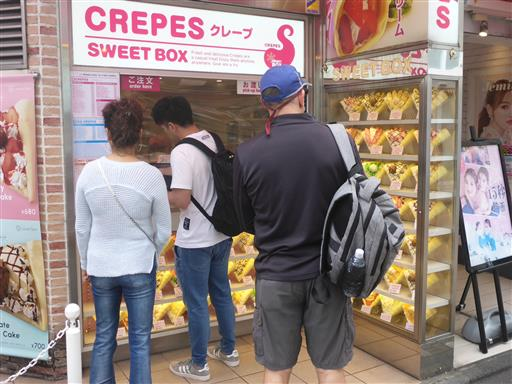
原宿駅前でシュプレヒコールをあげる人たち。そういえば今日はメーデーだ。
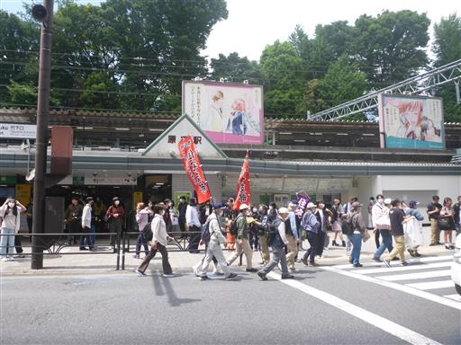
レストランシャルムで昼食をとったら帰宅する。
子供のいない休日をのんびり楽しむことができた。
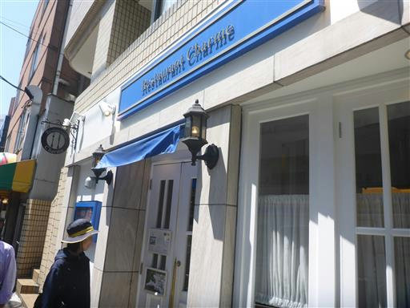